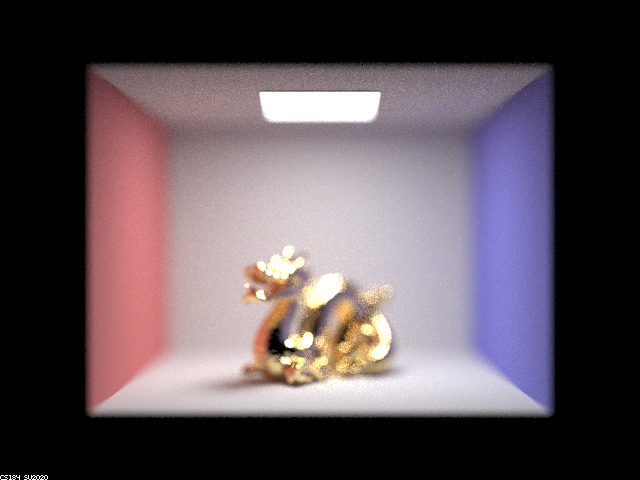
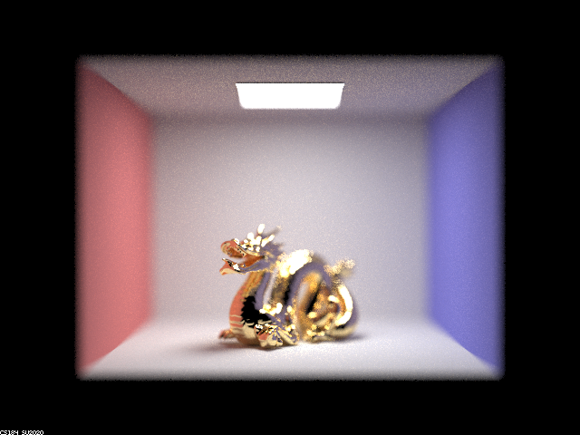
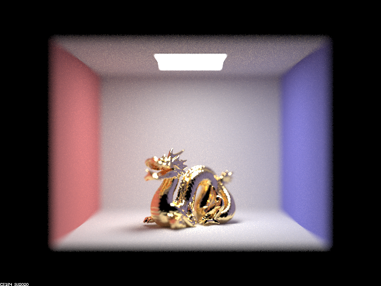
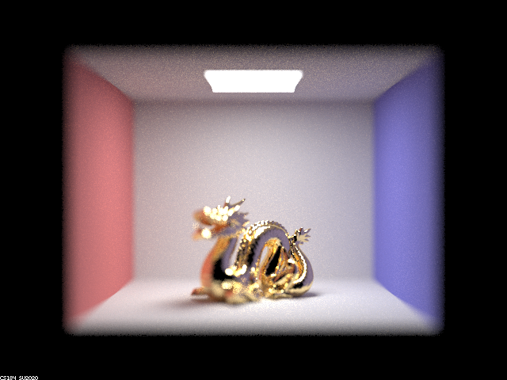
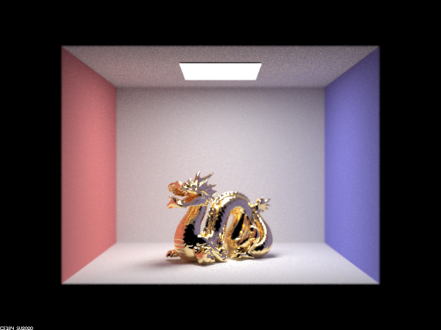
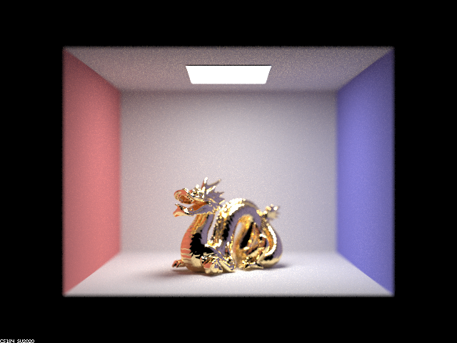
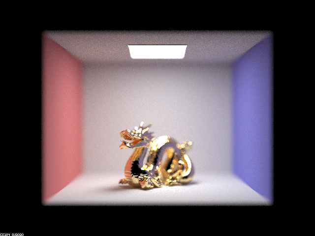

Overview
In this project we implemented a few features to upgrade our existing raytracer (Project 3-1). We chose to add reflective and refractive materials (part 1), and depth of field (part 4). This allowed us to generate even more realistic looking images and in a variety of formats compared to the original raytracer.
Show a sequence of six images of scene `CBspheres.dae` rendered with `max_ray_depth` set to 0, 1, 2, 3, 4, 5, and 100. The other settings should be at least 64 samples per pixel and 4 samples per light. Make sure to include all screenshots.
Your response goes here.
Point out the new multibounce effects that appear in each image.
Your response goes here.
Explain how these bounce numbers relate to the particular effects that appear. Make sure to include all screenshots.
Your response goes here.
In a few sentences, explain the differences between a pinhole camera model and a thin-lens camera model.
In this section we implemented a thin-lens camera model to render the depth of field effect.
In the original ideal pinhole camera model, everything is treated as in focus. When we switch to a
thin-lens camera model, objects are only in focus if they are at a specific distance (the focal distance)
away from the lens. This causes certain areas of the scene to be in focus, and other areas to be blurry.
To do this, we randomly sample a point on the thin lens (which has some area defined by the lens radius)
and calculate where it will intersect with the plane of focus. Because of the property that rays from the
same point on the plane of focus always focus to the same point on the image plane, we can just use the
pinhole camera model's intersection with the plane of focus as the intersection for the sampled point as well.
Show a "focus stack" where you focus at 4 visibly different depths through a scene. Make sure to include all screenshots.
Here we have different depths in focus (depending on focal distance). We see that as focal distance increases, a further back section of the dragon comes into focus.
|

|

|
|

|

|
Show a sequence of 4 pictures with visibly different aperture sizes, all focused at the same point in a scene. Make sure to include all screenshots.
Here we have different aperture sizes (depending on lens radius). We see that as aperture increases, the area of the dragon that is in focus decreases (though the front belly of the dragon is always in focus).
|

|

|
|

|
|